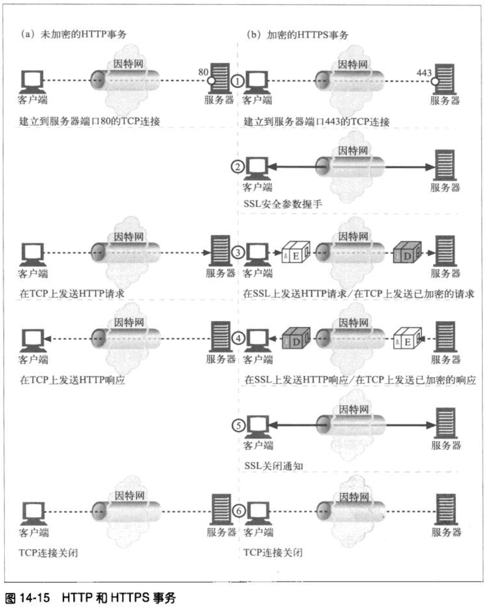

HTTPS
OSI七层协议模型和TCP/IP协议模型：

HTTPS：也称作HTTP over TLS。
SSL/TLS: 安全套接字/传输层安全
- 它提供的服务主要有：
- 认证用户和服务器，确保数据发送到正确的客户机和服务器；
- 加密数据以防止数据中途被窃取；
- 维护数据的完整性，确保数据在传输过程中不被改变。
- 属于哪一层？
=>答案是：在OSI七层模型中，它属于第五层（会话层）和第六层（表示层）；在TCP/IP协议中，对应于应用层。
- 它不执行“寻址”，因为它使用已建立的TCP连接，在其之上创建（加密）会话。因此会把它放在第4层（传输层）之上的会话层。
- 从它的功能来看，TLS和SSL属于加密应用层数据的级别，对应于表示层。
- 图解：

传输层传递的是数据段，应用层是完整报文。?? 错！！！
=>传递的都是字节码,文本在保存的时候，保存的是字节码。打开的时候，使用选定的解码方式转换成字符。
在发送已加密的http报文之前，客户端和服务器要进行一次ssl握手，在这个握手过程中，他们要完成以下工作：
- 交换协议版本号
- 选择一个两端都了解的密码
- 对两端的身份进行认证
- 生成临时的会话密钥，以便加密信道
http和https事务：

TLS握手过程:

单向认证和双向认证:
单向认证：
客户端向服务器发送消息，服务器接到消息后，用服务器端的密钥库中的私钥对数据进行加密，然后把加密后的数据和服务器端的公钥一起发送到 客户端，客户端用服务器发送来的公钥对数据解密，然后再用传到客户端的服务器公钥对数据加密传给服务器端，服务器用私钥对数据进行解密，这就完成了客户端 和服务器之间通信的安全问题，但是单向认证没有验证客户端的合法性。
双向认证：
客户端向服务器发送消息，首先把消息用客户端证书加密然后连同时把客户端证书一起发送到服务器端。
服务器接到消息后用首先用客户端证书把消息解密，然后用服务器私钥把消息加密，把服务器证书和消息一起发送到客户端。
- 客户端用发来的服务器证书对消息进行解密，然后用服务器的证书对消息加密，然后在用客户端的证书对消息在进行一次加密，连同加密消息和客户端证书一起发送到服务器端，
- 到服务器端首先用客户端传来的证书对消息进行解密，确保消息是这个客户发来的，然后用服务器端的私钥对消息在进行解密这个便得到了明文数据。
细节部分
- 握手过程使用非对称加密
- 通信过程使用对称加密
- 公钥加密，私钥解密
更详细的HTTPS工作原理
=> HTTPS工作原理